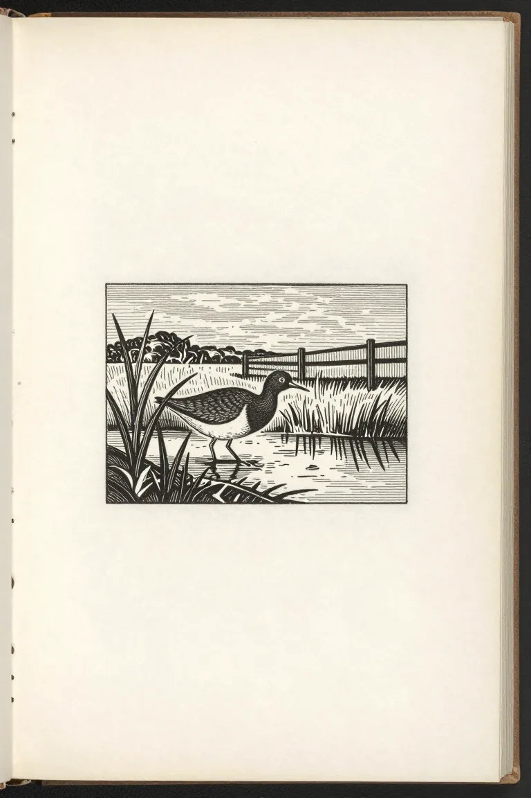

print · 1790–1950 · also: Holzstich (German), gravure sur bois de bout (French), white-line engraving
A burin cuts lines into a boxwood end-grain block, which is inked on the surface and printed with type. The cut becomes a white line on black, and fine parallel hatching gives the grey tones of Victorian magazines.

Core thesis
A burin on the end grain of boxwood cuts white lines in a black block, so that fine tone and exact detail print with type.
Design principles
Think in white lines: each cut makes a white mark, and the uncut wood prints black.
Build tone with parallel cuts of 0.1–0.4 mm; widen the cuts to lighten a tone.
Use a tint tool to rule even grey skies and backgrounds, at about 100 lines an inch.
Print the block at type height, so that the picture sits in the text page with no join.
Keep the picture to one black ink; add colour only as a flat tint from a second block.
Join several blocks with bolts for a large picture, and place the joins in a quiet area.
Anti-patterns
Gouge cuts with the coarse grain of a side-grain woodcut